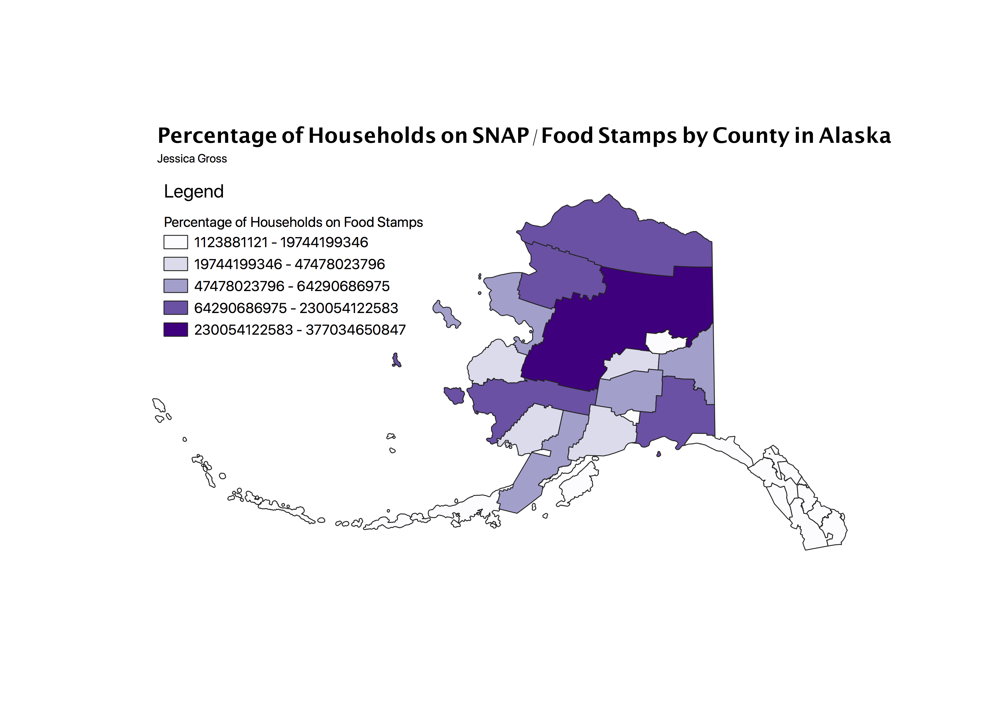

Homework 7: Chloropleth Map
Jessica Gross
This map depicts the percentage of households on SNAP/Food stamps by county in Alaska
This map has an increase of percentage as the gradient gets more purple.
I am not familiar with the popoulation density in Alaska, but would assume that the inner most portion is the most rural and remote, which coorlates with the deepest purple.
On the other hand, the more coastal areas have the least amount of people on SNAP/Food Stamps.
I must admit I was unable to figure out how find the correct percentage measurements on the legend, I tried several different data sets and made sure to clean the data and this is still the same numbers that pop up.
I realize the measurements are probably not right with the percentage.

Data used for this project
Link to Shapefile
Csv file:
CSV File